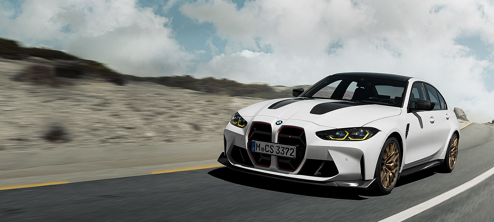

Žmonėms norintiems ir tropiškos temperatūros ir senovinės architektūros siūloma aplankyti Graikiją ir ją supančias salas. Būdami Graikijoje turistai turi galimybę atsipūsti šiltoje aplinkoje, pamatyti įvairius istorinius pastatus, mėgautis vietinių gera nuotaika bei maistu. Unikali Graikiška virtuvė garantuoja šviežiausias jūros gėrybes bei nuostabiausių prieskonių prisotintų patiekalų asortimentą. Tai kelionės pasirinkimas žmonėms norintiems aktyvią kelionę praturtinti ir poilsiu prie žydrosios jūros ar nardymu tarp rifų. Šioje kelionėje bus visko!
10 naktų su pusryčiais ir kosminiu laivu neribotam laikui
Car rent
Available cars
Car make
Photo
Rental time / Price
1d.
2d.
4d.
7d.
BMW

40 €
69 €
128 €
199 €
AUDI
40 €
75 €
135 €
235 €
BMW
40 €
69 €
128 €
199 €
Tips for travellers
Active Travel Tips
Pack appropriate clothing and footwear for your journey.
Plan your route in advance and have maps or navigation tools ready.
Ensure you have an adequate supply of water and food.
Arrange accommodations and know your overnight stays in advance.
Active Travel Recommendations
Explore national parks and nature reserves for outdoor adventures.
Try mountain biking or hiking for a thrilling experience in nature.
Discover towns and villages, explore their culture, and experience local cuisine.
Appreciate the beauty of nature through leisurely walks or other activities.
Participate in community sports events alongside local residents.
The Magazine
Exploring the Wonders of Machu Picchu
Lost Inca City
Step back in time as you discover the Lost Inca City of Machu Picchu, nestled high in the Andes. Marvel at the ancient ruins and breathtaking mountain vistas.
Preservation Efforts
Learn about the ongoing preservation efforts aimed at protecting this UNESCO World Heritage site. Explore the Inca culture and the significance of this historical treasure.
Take a step back in time as you explore the remarkable ancient ruins of Rome. The Roman Forum, a bustling center of activity in ancient Rome, stands as a testament to the city's storied past. You'll find yourself surrounded by the remnants of temples, arches, and government buildings that once defined the heart of the Roman Empire.
Art and Architecture
Marvel at the exquisite Renaissance art and the splendid architecture that graces the city. St. Peter's Basilica, the epicenter of Christianity, offers breathtaking beauty and grandeur. The intricately designed dome, the masterful artworks by Michelangelo and Raphael, and the awe-inspiring Bernini's baldacchino leave a lasting impression on every visitor.
La Dolce Vita
Experience the "sweet life" as you wander the enchanting streets of Rome. Savor authentic Italian gelato, which is often hailed as the world's best, and indulge in an espresso at a charming sidewalk café. Rome's enchanting atmosphere, where history blends seamlessly with modern life, invites you to embrace "La Dolce Vita" in every corner.
Discover the treasures of Rome's past and present with our Rome City Guide. This comprehensive guide provides insights into Rome's history, art, and culture, helping you make the most of your visit. Whether you're exploring ancient ruins, admiring artistic masterpieces, or enjoying the pleasures of Italian cuisine, Rome offers a journey through time and culture.
Published on:
Trekking in the Himalayas: An Everest Base Camp Adventure
Roof of the World
Embark on an epic journey to the Roof of the World. Trek to Everest Base Camp, witness stunning Himalayan vistas, and experience the culture of Sherpa communities.
Mountain Majesty
Discover the mountain majesty of the Himalayas. Explore monasteries, prayer flags, and the world's highest peaks. This adventure is a spiritual and physical challenge.
Discover the immense beauty and biodiversity of the Amazon Rainforest. The lush green canopy, exotic wildlife, and winding rivers create a truly breathtaking natural spectacle that can't be found anywhere else on Earth.
Jungle Expeditions
Embark on thrilling jungle expeditions to encounter rare wildlife and indigenous tribes. Your journey into the heart of the rainforest promises encounters with magnificent creatures such as jaguars, macaws, and pink dolphins. Along the way, you'll have the chance to learn about the rich cultural heritage of indigenous communities.
Plan your adventure with our Amazon Travel Guide. This comprehensive guide provides valuable information for planning your trip, including recommended itineraries, safety tips, and a packing checklist.
Book your journey between and to catch the best weather and wildlife-viewing opportunities. The Amazon Rainforest, with its captivating beauty and biological diversity, awaits your exploration.